Real component library
Resistors with color bands worked out from their value, ceramic and electrolytic capacitors, inductors, diodes, colored LEDs, transistors, MOSFETs, potentiometers and header pins.
Free · Open source · No sign-up
Perfboard Designer is an online layout tool for perfboard (protoboard) and stripboard (Veroboard) projects. Place resistors, capacitors, LEDs, transistors, ICs and wires on a virtual hole grid, cut the strips where you need them, see how everything fits, and catch mistakes before they cost you a desoldering session.
Runs in your browser. Nothing to install, nothing uploaded.
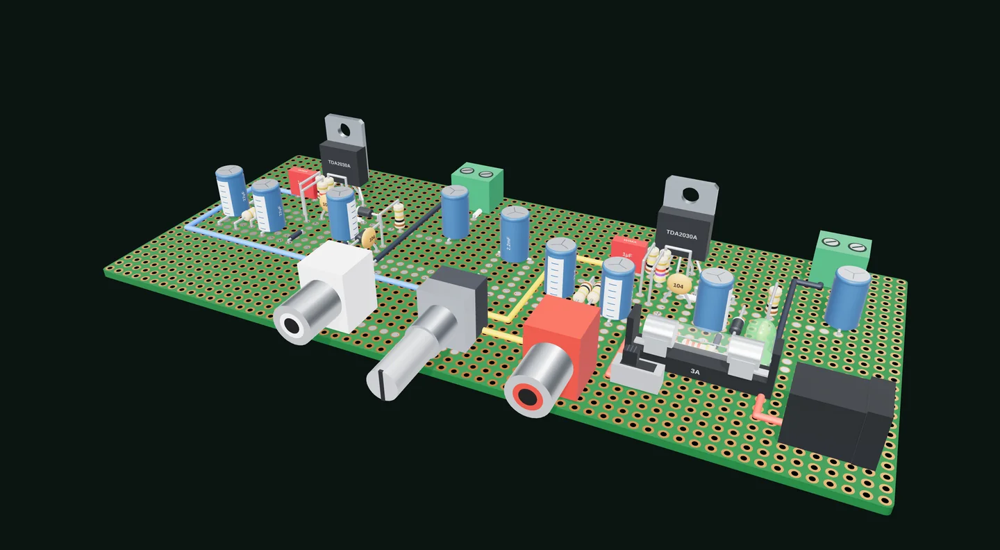
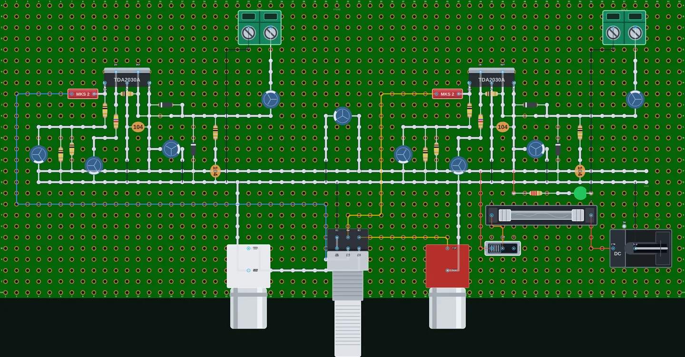
In the parts library
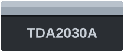
TDA2030A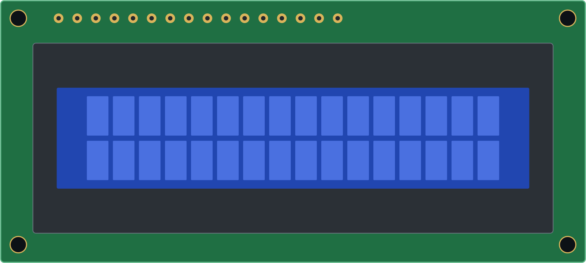
LCD 1602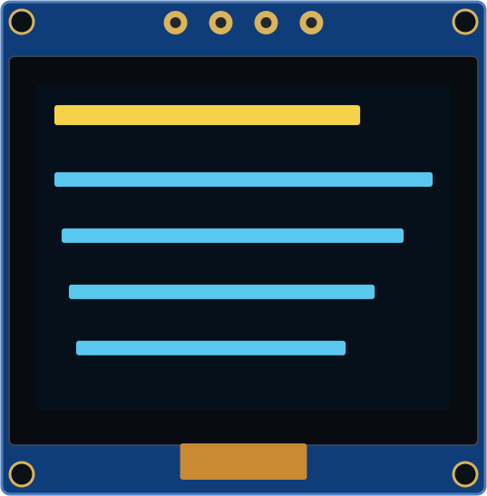
OLED displays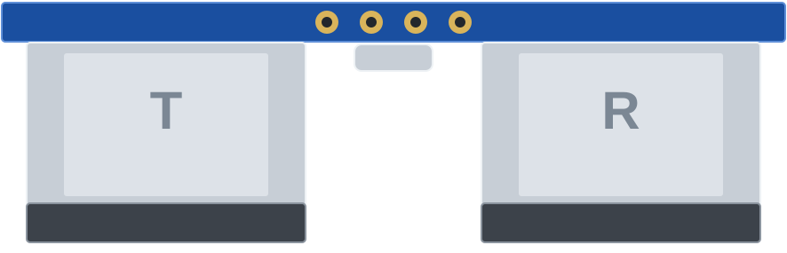
HC-SR04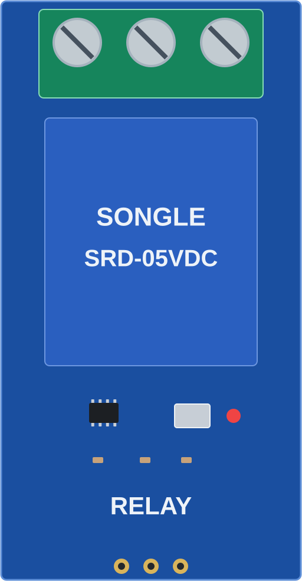
Relay modules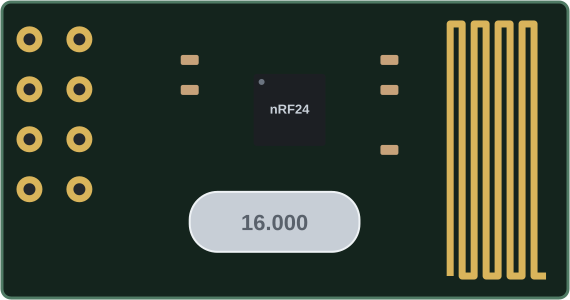
nRF24L01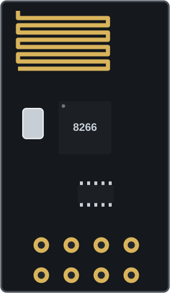
ESP-01Made for makers, students and hobbyists who want a plan before picking up the soldering iron.
Resistors with color bands worked out from their value, ceramic and electrolytic capacitors, inductors, diodes, colored LEDs, transistors, MOSFETs, potentiometers and header pins.
Drop in an NE555 timer, DIP-14 and DIP-16 logic chips, an ATmega328P or an Arduino Nano. Missing a part? Make your own: a chip, a dev board, a module with pins anywhere, or a transistor in a package the library has, with its own pinout.
Draw jumper wires in any color and three thicknesses. Straight runs of the same color merge into a single wire automatically.
Lay out on a perfboard or a stripboard, start from a preset or set your own grid size to match the board on your bench, then zoom, pan and go fullscreen while you work.
Keep as many projects as you like in the browser, saved automatically as you go. Send a board to anyone as a share link, download it as a project file, or export it as a PNG or SVG image.
Undo and redo, keyboard shortcuts, notes on any hole, and part names and values (R1 10k) shown right on the board.
Connect Claude, ChatGPT, Cursor or any MCP client to the Perfboard Designer MCP server and ask for a layout in plain words. It places the parts, routes the wires, checks every connection and hands you a link that opens the board here.
New · Stripboard
Switch any layout between Perfboard and Stripboard with one click. On a stripboard the copper strips run along every row, so parts on the same strip are already connected. Use the Cut tool to break a strip at a hole, for example under a DIP chip so its two rows of pins don't short.
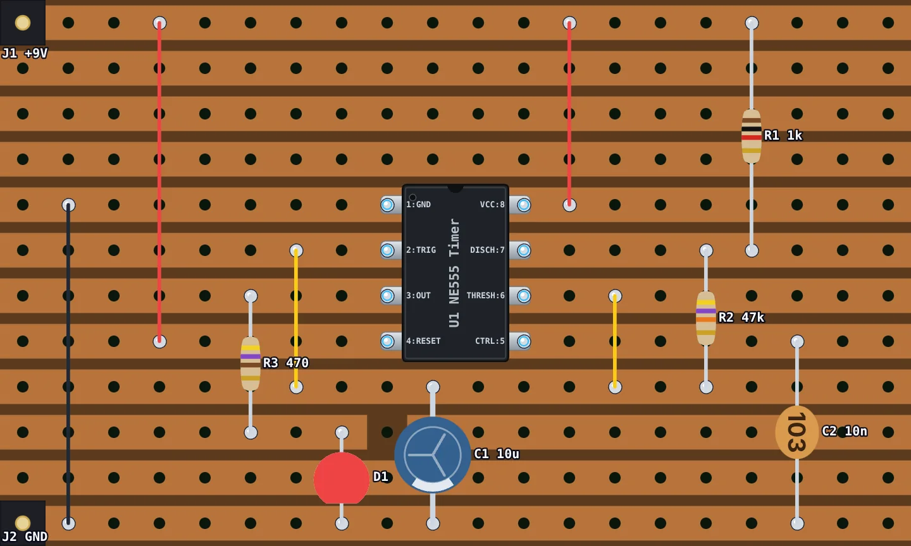
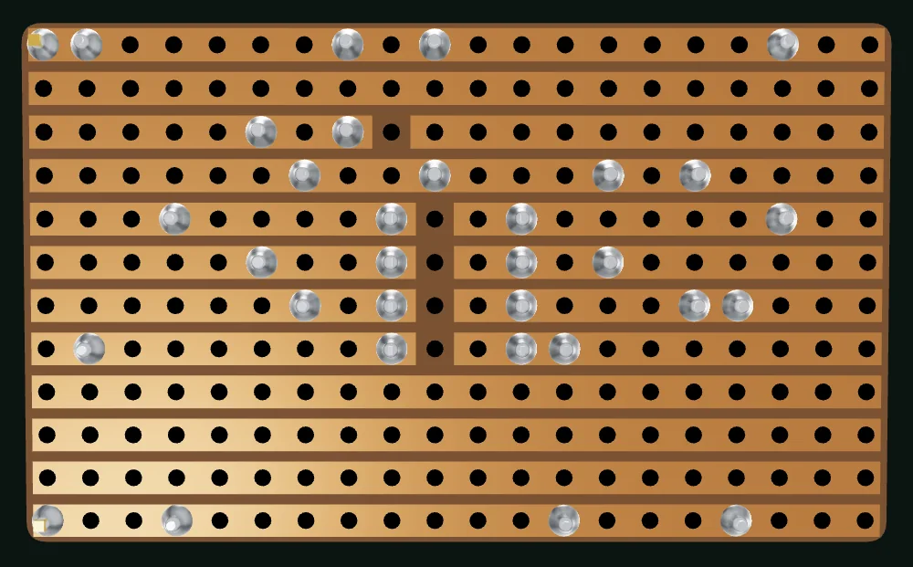
New
One click on 3D View turns your layout into a 3D model of the finished board: resistors with their color bands, ICs with labeled pins, LEDs, capacitors, transistors, pots, headers and every jumper wire, sitting on a perfboard or stripboard sized to match yours.
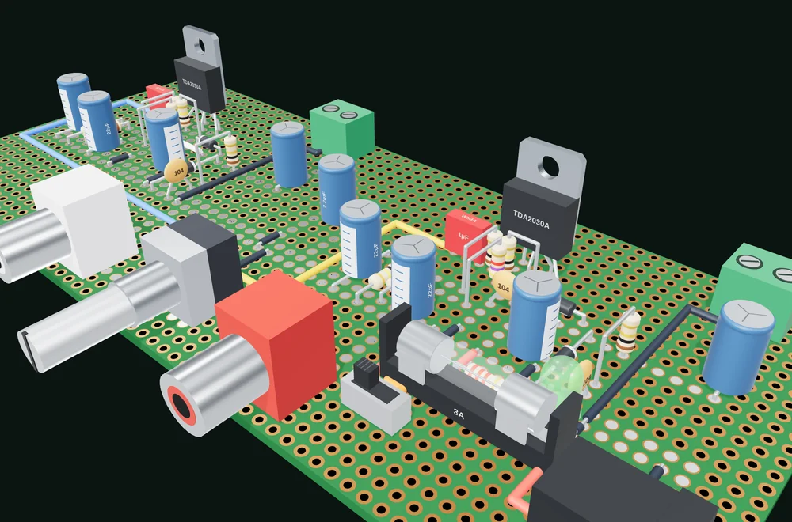
Choose perfboard or stripboard, then a preset or the number of holes across and down to match the board on your bench.
Click to drop components onto the holes, rotate chips, and draw wires between pins.
Save the project file, export an image to keep next to your soldering iron, and build with confidence.
Yes. It's completely free and open source, with no account, ads or limits.
No. It runs in any modern web browser. It works best on a desktop or laptop with a mouse.
On your own device. Your projects are saved in this browser automatically as you edit: open, rename, duplicate or delete them from File → Open Project. "Save Project to File" downloads a project file you can import again or share. Nothing is uploaded to a server, unless you make a short share link: that stores a copy of the board so the link can be short. If you accept analytics cookies, Google Analytics counts which pages are visited, never what's on your boards; Cookie settings at the foot of the page changes that.
Yes. Switch the board to Stripboard and copper strips run along every row or column. Use the Cut tool to cut a strip at any hole; the cuts are saved with your project and shown on the copper side of the 3D view.
Yes. Click Custom part… at the top of the parts list and pick what it is: a chip or dev board with labeled pins, a module with pins anywhere, or a part in a package the library has, such as a BC337 transistor (a TO-92 with its own pinout). You can edit it again later, and it travels with every board that uses it.
No. Perfboard Designer is a layout planner: it helps you work out where parts and wires go on the board. It doesn't simulate circuits or check them electrically.
Please do! Bug reports, ideas and pull requests are welcome on GitHub. See the contributors who already helped.
Open the designer and lay out your first board in a few minutes. New to perfboard or soldering? Start with the guides: how to plan a perfboard layout, how to solder, or build a 555 LED blinker step by step.
Open the designer →